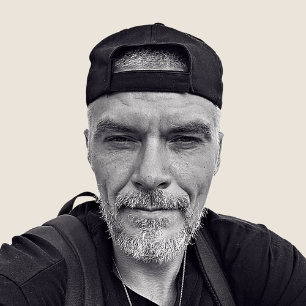

Core
Identity and purpose
422 Hz
Root Band · 250 to 425 Hz
Your exact birth moment resolved into four personal frequencies, calculated from more than 248 celestial data points. Here are the values, the bands they land in, and the music built around them.
Calculated from your exact birth moment
Identity and purpose
Root Band · 250 to 425 Hz
Connection and relationships
Solar Plexus Band · 425 to 600 Hz
Energy and momentum
Solar Plexus Band · 425 to 600 Hz
Exchange and opportunity
Throat Band · 600 to 775 Hz
Your frequency is what your signal is. Your band is how you naturally process that part of your life. The exact value identifies the signal. The band describes the channel through which understanding most naturally takes shape.

“It's like a little cheat code for experiencing your authentic vibration. Because it's personalized to you, not generic. I use it every day. This one earned it.”David McEwenTransformation Thought Leader · Over 12 Million YouTube Views
The spectrum is continuous, not a ladder. Everyone uses all four bands. Your placements show where each part of your profile naturally begins.
Increases identity coherence and aligns you with your true purpose.
Identity and purpose through grounding and steadiness. Settle first and let the answer take shape from the settled place. Identity is experienced as felt stability in the lower belly.
Expands magnetism, attunement, and connection.
Connection and relationships through motion and drive. Move on the question and let the answer form while you are in motion. Connection is experienced as drive and momentum through the middle body.
Steadies your nervous system and keeps your energy clean.
Energy and momentum through motion and drive. Move on the question and let the answer form while you are in motion. Energy is experienced as drive and momentum through the middle body.
Aligns your timing with prosperity, opportunity, and exchange.
Exchange and opportunity through words. Say it, write it, or name it until the knowing completes in the sentences. Prosperity and opportunity are experienced as voiced articulation through the upper body.
Your four frequencies, Core, Love, Vitality, and Abundance, are the referential domains of your experience.
The Hz level of each frequency determines the band, your modality of processing for that frequency domain. The system is a continuous gradient up the spine. While we identify four primary anchor points, your frequency is a precise coordinate on this vertical axis. If you land between two bands, you experience a blend of those processing styles.
250 to 425 Hz
Location: Lower Belly
Character: Settled and Steady
Lived Experience: Metabolize through Stability (Grounded)
425 to 600 Hz
Location: Middle Body
Character: Active and Driven
Lived Experience: Metabolize through Motion (Momentum)
600 to 775 Hz
Location: Upper Body
Character: Voiced and Named
Lived Experience: Metabolize through Expression (Articulation)
775 to 950 Hz
Location: Top of Head
Character: Pattern and Perspective
Lived Experience: Metabolize through Context (Bigger View)
Domain: Identity and self-alignment. The internal reference signal for who you are and what is yours to do.
Processing Nuance: This is how you experience “me vs. not me” and your core values.
Root: You make sense of who you are through a sense of stability and steadiness. You know yourself when you feel anchored; identity confusion clears when you return to a grounded state.
Solar Plexus: You experience your identity through drive and momentum. You know who you are when you are in motion; your values are clarified through the initiative you take.
Throat: You metabolize your identity through articulation. You understand yourself by naming your experience; you know who you are when you can voice it.
Crown: You experience identity through perspective. You make sense of yourself by seeing where you fit in the bigger picture; self-recognition comes from the bird's-eye view.
Domain: Relationships and emotional attunement. The internal reference signal for connection within yourself and with others.
Processing Nuance: This is how you determine affinity and metabolize the information of a relationship.
Root: You process connection through a sense of safety and grounding. You know a connection is right when your system feels steady and the guard drops.
Solar Plexus: You experience connection through shared motion. You make sense of your bonds through what you are doing together and the generative energy between you.
Throat: You metabolize connection through spoken truth. You understand the depth of a bond through what is voiced; the connection becomes real through honest expression.
Crown: You process connection through recognition and fit. You make sense of others by seeing the pattern of how they fit into the context of your life.
Domain: Energy and nervous system steadiness. The internal reference signal for energy, tension, and recovery.
Processing Nuance: This is how you experience inspiration and how your system recharges.
Root: You metabolize energy through stillness. You feel vital when your system is quiet and held; recovery is processed through a return to the baseline.
Solar Plexus: You experience vitality through action. You make sense of your energy levels through your capacity for drive; you are recharged by the act of starting.
Throat: You process vitality through expression. You feel vitalized when you are creating or speaking; your energy is metabolized through your voice.
Crown: You experience vitality through discernment. You make sense of your energy by seeing where it belongs; clarity of perspective is what keeps your system regulated.
Domain: Opportunity, expansion, and exchange. The internal reference signal for action, exchange, and material result.
Processing Nuance: This is how you recognize opportunity and metabolize the timing of the field.
Root: You process opportunity through a sense of gut-level stability. You know the timing is right when the exchange feels grounded and safe to move toward.
Solar Plexus: You experience opportunity through momentum. You make sense of timing through the faster yes; the path becomes clear only once you are in motion.
Throat: You metabolize opportunity through the named ask. You recognize the right timing when you can voice the exchange; naming it is what moves the energy.
Crown: You process opportunity through pattern and timing. You make sense of exchange by seeing the shape of the moment before it lands; the view from above reveals the opening.
Forcing yourself into the wrong modality creates friction. If your Identity is in the Throat, but you try to use Root grounding to find yourself, you may feel frustrated. The system clarifies your natural emphasis so you can stop fighting your nature.

“When I listened to my core frequency track, my whole nervous system relaxed into recognition. Like coming home to myself.”Rhonda BrittenAuthor of “Fearless Living” · Emmy Award-Winner · Founder, Fearless Living Institute
“If you're tired of living out of tune with yourself, this is your invitation home.”
No new system to learn. No demanding practice to keep up with. Here is how to listen, what people reported, what is included, the membership, and the questions people ask before they begin.
 Hillary PortaWomen's Executive Coach
Hillary PortaWomen's Executive Coach
“Within minutes, my nervous system just took an exhale. I felt like I came home to myself. People have even asked me, ‘What are you doing? You seem different, calmer, more present.’”

Alex NazarovFounder, Super Luxury Group“Zodiac.fm is my anchor. I’ve explored Kabbalah, Human Design, Gene Keys… but this music is the only thing that brings me into full embodiment.”
 Katie WellsFounder, Wellness Mama
Katie WellsFounder, Wellness Mama
“I notice my intuition is sharper, my nervous system softer, and I show up more grounded. For my family, my work, and myself. It’s not just ‘me time’; it’s the reset that helps me become the version of me I want to bring to the world.”
From January 2025 to January 2026, 300 people listened to Zodiac and answered 6 open-ended questions every two weeks. Here’s what they experienced:
84% called Zodiac “Life Changing.” 98.6% would recommend it to a friend. Results from the as-designed cohort: 9+ minutes per day with Frequency Balance.
 Debra SilvermanAstrologer to Sting, Jennifer Aniston, and More
Debra SilvermanAstrologer to Sting, Jennifer Aniston, and More
“This music tickled my soul and reminded me that there’s such a connection between vibration, the stars, and the sounds that are coordinated by higher intelligence.”
 Barbara DitlowMaster Practitioner, Human Design & Astrology · Endorsed by Ra Uru Hu, Founder of Human Design
Barbara DitlowMaster Practitioner, Human Design & Astrology · Endorsed by Ra Uru Hu, Founder of Human Design
“Zodiac core frequencies translate this unique imprint into sound, bypassing the mind and speaking directly to the body.”
 Maya Shetreat, MDAdult & Pediatric Neurologist · Expert Astrologer · Best-Selling Author
Maya Shetreat, MDAdult & Pediatric Neurologist · Expert Astrologer · Best-Selling Author
“Employing vibration and frequency for our well-being is the future. And Zodiac.fm is way ahead of the curve.”
 Summer PhoenixHuman Design and Gene Keys Practitioner
Summer PhoenixHuman Design and Gene Keys Practitioner
“Zodiac.fm works at the frequency level underneath the pattern. Instead of just studying your blueprint, you begin resonating with it.”
“I am so impressed with how I immediately noticed a difference down to the cellular level with Zodiac.fm. As the Founder of a certifying organization, I am very careful about what I endorse.”
If you just listen for 9 minutes a day for 30 days, we promise you will experience undeniable life changes.
If not, you can get a full refund. No questions asked.
Although it took years to create and research this experience, Zodiac.fm has only just begun.
These next features take time and money, and Zodiac.fm is bootstrapped. This is why you can grandfather your rate to as little as $7.33 a month.
That’s less than a used book. And dramatically less expensive than one reading or sound healing session.
As long as you stay a member, we will not raise your rate while we keep adding these features.
By clicking “Hear My Frequencies” you agree to automatic subscription renewal. First year is $110, then $110/year. Cancel via the app or email support@zodiac.fm.
 Paul TribeAddictions Counselor
Paul TribeAddictions Counselor
“I have tried a lot of different meditation and sound healing techniques: Holosync, Waking Up, The Tapping Solution, Headspace, and Insight Timer. Yet I haven’t had anything quite so profoundly powerful and transformative as Zodiac.fm.”
 Hilary DiMassimo
Hilary DiMassimo
“While listening, I’ve had otherworldly visualizations and felt real shifts in my life from the very first week. Friends and family noticed the change in my presence. In week one, I was offered a dream position. By week three, insights flowed daily. The feeling these audios give me is pure home where nothing else matters.”
 Amy Wilcox
Amy Wilcox
“I am seeing a huge difference in how much more loving I am. I’m more affectionate, more grounded.”
 Joey VaillancourtCMO of Biooptimizers (Fortune 100 Company)
Joey VaillancourtCMO of Biooptimizers (Fortune 100 Company)
“Without doing anything but listening, I become a different person. I shift into the version of me I actually want to be. I can tap into different frequencies based on what I need, abundance when I’m visualizing, love when I want to connect with people, core when I need to realign.”
Hillary PortaWomen's Executive Coach
“Once I started listening to all of the different frequencies, but in particular the abundance one, I landed two new clients that came literally out of the blue.”
Don’t worry this is a common question. We will be honest, your birth time does affect the calculation of your frequencies.
However, because the Zodiac works like a tuning fork to create resonance to amplify your signal, if it is close enough you will still get an effect. Just not as fast or clear as you would if it was exact.
Once you are a member, we will provide ways for you to get your birth time. It is easier than you think. And if you aren’t getting effects, we can change your birth time for you once a week until you experience resonance effects.
This happens all the time, and 95% of the time we get there. So just choose 12:00 NOON if you have no idea, otherwise make an educated guess.
You enter your birth details. We calculate four frequencies from 248 celestial data points. We embed those frequencies into music remastered up to 700 times to tune precisely to you.
Our beta showed listening for a minimum of 9 minutes a day produced results.
But most people listen for over an hour. Not because they have to. Because the music is good. Really good. But the more you listen, the more profound the results.
These aren’t generic meditation drones. Real composers. Real production. Your frequencies are embedded and tune each song.
Play it at home. In the car. At the gym. While you work. Build playlists. Loop your favorites. Fall asleep to it.
This isn’t a practice you have to remember. It’s music you’ll actually want on.
Good. This isn’t about learning more information. It’s about your system recognizing its pattern from the inside. Knowing your chart cognitively is different from embodying it automatically.
And once you experience the intelligence of your chart from within, you will wonder how you functioned without it.
You don’t need to believe anything. The frequencies are calculated mathematically from your birth moment. Listen and notice what happens.
Yes. Meditation, breathwork, yoga, plant medicine, Qi Gong, prayer, and manifestation are dramatically enhanced by combining your Zodiac frequencies. Practitioners of almost every tradition combine Zodiac for exponential results.
Yes. No contracts, no hassle. Cancel in the app, or email support@zodiac.fm and a real human will help.
You’ll see your four frequencies in exact Hz. Where each one lands in your body. Your frequency distribution type and what it means. Your chart, mapped in a way no one has shown you before.
Now hear what your profile sounds like.
Your values run continuously through cinematic, lyric-free music built around your four personal frequencies.
Hear My Frequencies → David's 20% coupon is applied automatically.